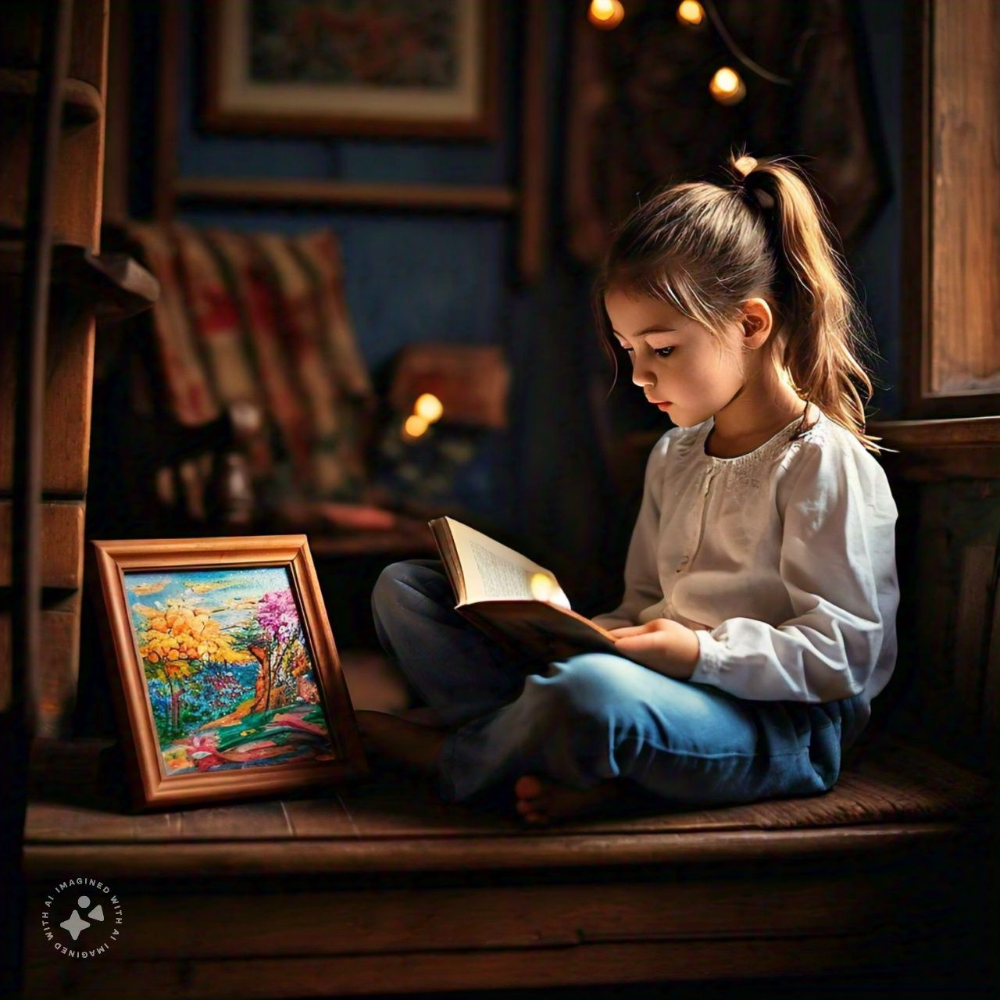

Our Favorite Books and Why They Matter
Books have the power to transport us to different worlds, evoke strong emotions, and shape our perspectives. Among the countless books we've read, there are a few that hold a special place in our hearts. For us, those books are Urdu novels like Jannat Ke Patty and Namal.
Jannat Ke Patty, written by Nimra Ahmed, is a tale of love, loss, and redemption. The story follows the protagonist, Aliya, as she navigates the complexities of life and relationships. What resonates with us is the author's masterful exploration of human emotions, making us reflect on our own experiences and connections.
Namal, penned by Nimra Ahmed, is a thought-provoking novel that delves into the themes of identity, faith, and personal growth. The narrative follows the journey of a young woman, Zaria, as she grapples with her beliefs and sense of belonging. We admire how the author skillfully weaves together philosophical and spiritual concepts, encouraging us to question and seek our own truths.These Urdu novels matter to us because they:
- Offer a window into Pakistani culture and society
- Explore universal themes that transcend borders and languages
- Showcase the beauty and richness of Urdu literature
- Inspire us to reflect on our values, beliefs, and relationships
- Provide a platform for meaningful discussions and connections
In conclusion, our favorite books, Jannat Ke Patty and Namal, are more than just stories – they are mirrors to our souls, guiding us toward empathy, self-awareness, and personal growth. We cherish these Urdu novels for the impact they've had on our lives and the connections they've helped us forge with others who share our passion for literature.